第4节：FAT32文件恢复实验
首先创建一个分区H，并格式化为FAT32，然后挂载
使用winhex打开磁盘H
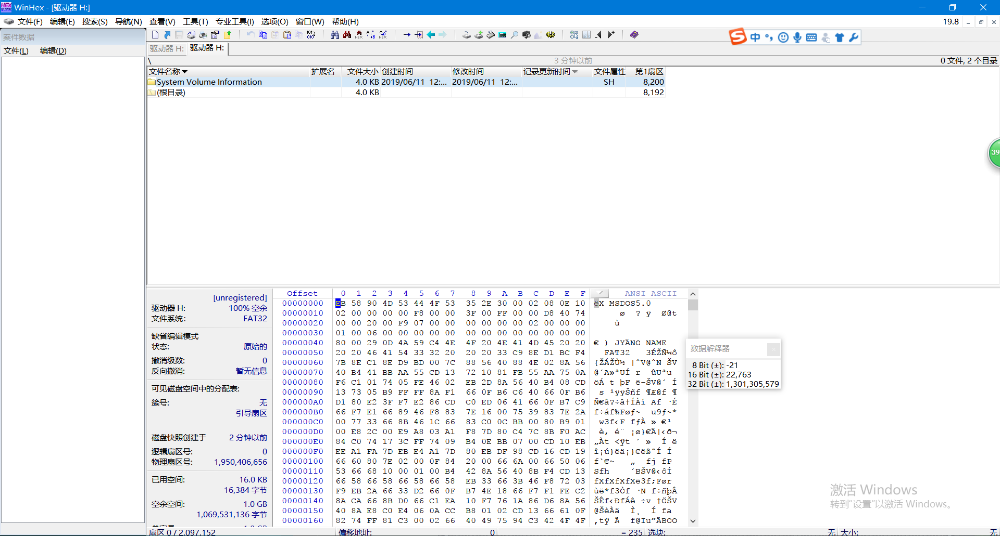
文件存储按照小端字节序
使用模板可查看各字节含义
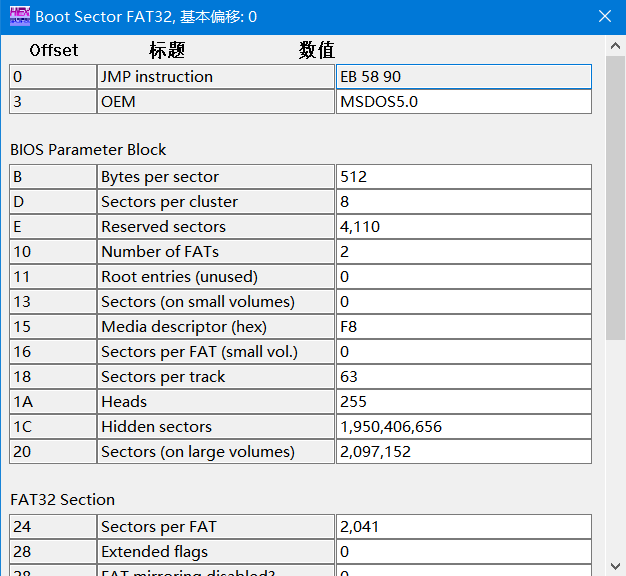
0BH~0CH：每个扇区（sector）512字节
0DH：每个簇（cluster）有8个扇区
0EH~0FH：保留扇区数4110
10H： 磁盘FAT的个数，2个
24H：每个Fat表占有的扇区数2041
在H盘创建一个Hello.txt，在根目录产生一个记录，如图阴影部分
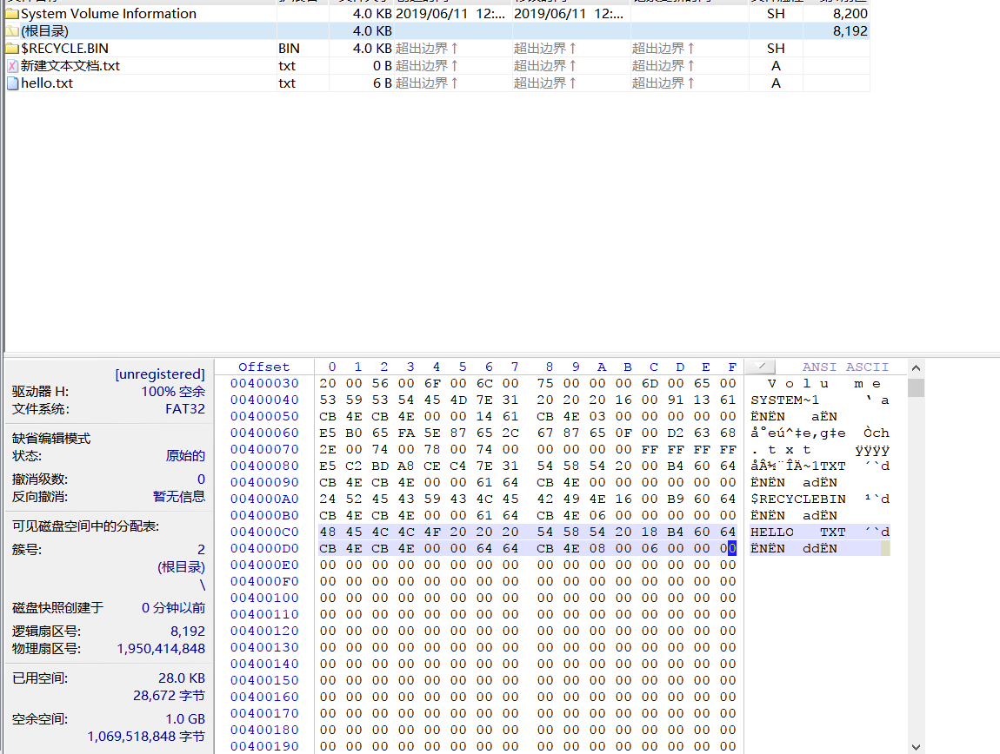
需要用到的信息：
0x14-0x15：2字节，文件起始簇号的高16位
0x1A-0x1B：2字节，文件起始簇号的低16位
0x1C-0x1F：4字节，文件长度
可知文件簇号为0000 0008H，大小是0000 0006H，即6字节.
去fat表中查看这个文件占用的簇
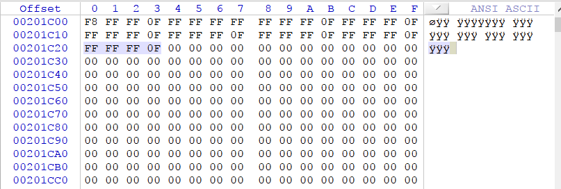
在fat表中，每四个字节对应一个簇，簇从0开始编号，但是根目录是2号簇，也就是说数据是从2号簇开始存储的。图中的阴影部分是8号簇的标记：FFFFFF0F，表示结束。可知Hello.txt只占用了1个簇，当文件占用了多个簇时，簇的标记指向文件占用的下一个簇的编号，类似于链表。
新建一个大一点的文件Hello1.txt，大小为9k字节
根目录的记录为：

起始簇号为0000 0009H，去fat表中查看
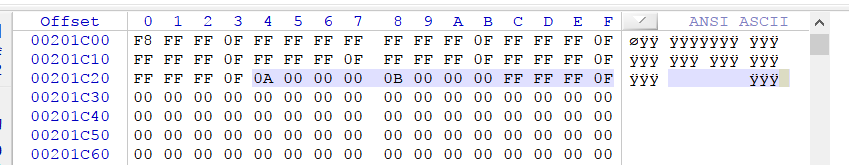
每个簇8个扇区，每个扇区512字节，所以9k文件共占用了3个簇。
我们看到第九号簇的标记是0000 000AH，表示文件下一个占用的是10号簇，10号簇内容是0000 000BH，表示文件下一个占用的簇是11号簇，11号簇内容是FFFF FFFF0FH，表示文件结束了。
文件删除并恢复
Shift+Delete永久删除大小为9kB的Hello1.txt，删除之后，在根目录下的记录为：
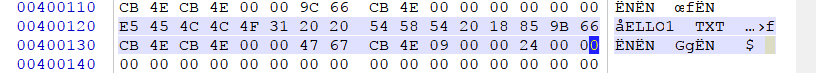
删除前的记录为：
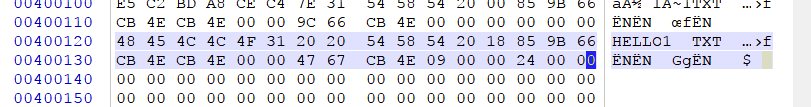
删除后的fat表为：
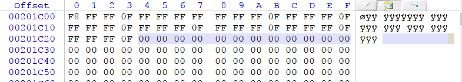
观察根目录的记录发现，只有首字节的48变成了E5，E5标志该目录项已被删除
fat表中对应簇的信息被清空,跳转到第九簇，即文件的存储区
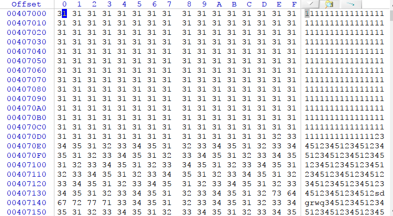
发现文件内容还在
恢复思路为：把根目录中的文件记录开头第一字节改成非E5开头，并填充fat表
修改首字节为48（h的ASCII码）
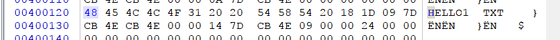
并修改fat表
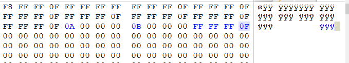
保存，H盘中生成hello1文件，并可以正常打开
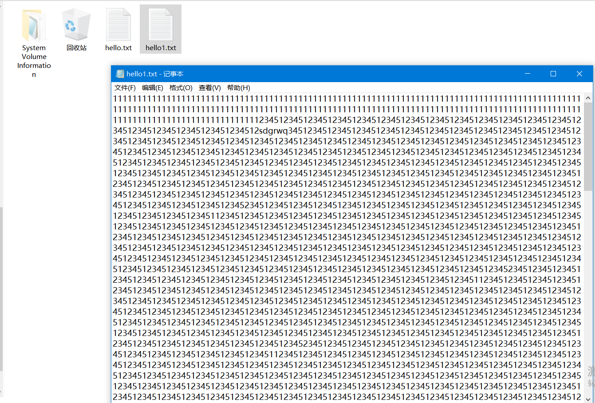
恢复原理:
对于短文件而言，永久性删除意味着：
<1>根目录目录项里文件名首字节改为E5，首簇号高位改为0000H。
<2>FAT表里簇链表被清空，逆向修改就可以恢复。